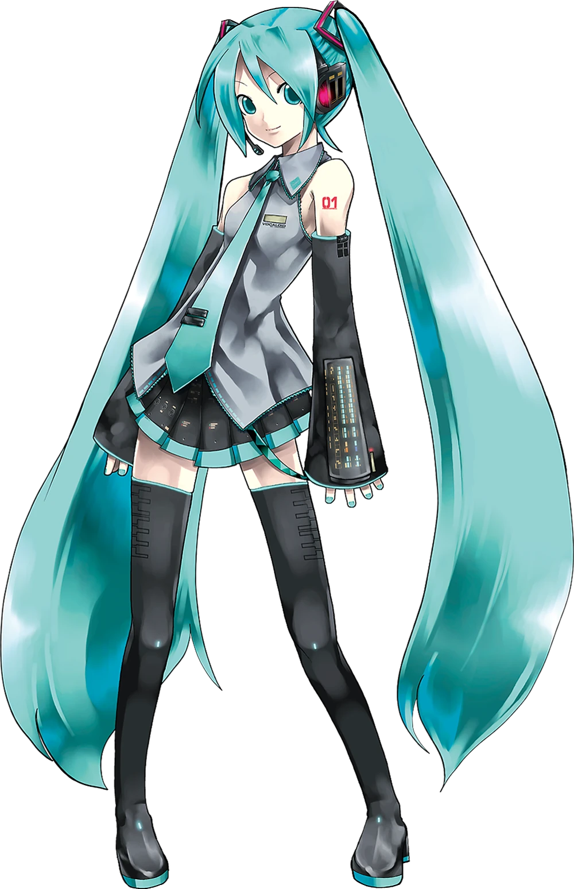
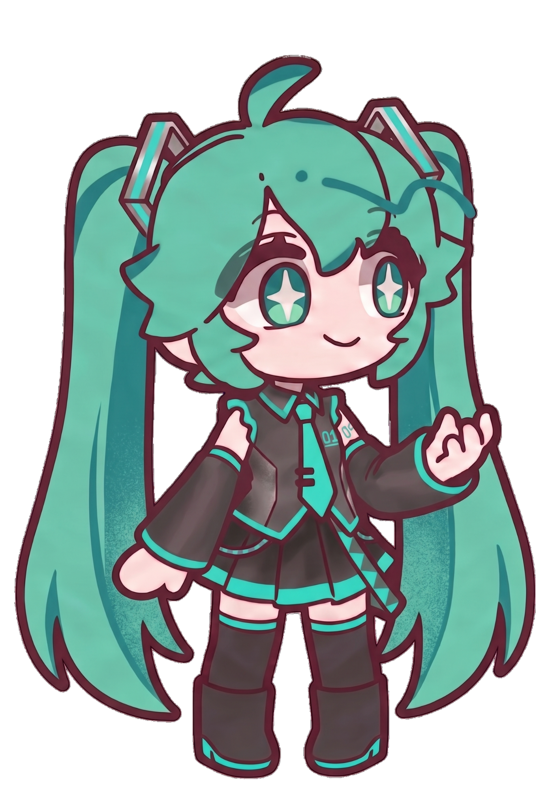

Developed by Crypton Future Media, Hatsune Miku is the ultimate virtual pop idol and the absolute pioneer of the Character Vocal Series. With her iconic teal twin-tails and futuristic aesthetic, she transformed from a simple vocal synthesizer product into a global cultural phenomenon.
Acting as a boundless "blank canvas" for musicians worldwide, her voice—sampled from Japanese voice actress Saki Fujita—has sung tens of thousands of original songs across every imaginable genre, proving that collaborative digital creation has no limits.
The Birth of a Diva
Released on August 31, 2007, for the Vocaloid 2 engine, Miku quickly went viral on the Japanese video-sharing site Nico Nico Douga. Fans didn't just write songs; they created animations, 3D models, and rich lore, building a massive, decentralized open-source-like community around her software.
Personality & Lore
Officially, Miku is 16 years old, 158 cm tall, and weighs 42 kg. Beyond that, her personality is entirely shaped by the creators who use her. Her absolute signature item is the Spring Onion (Negi), a legendary meme born from the viral "Ievan Polkka" video. She stands as a symbol of infinite creative potential.
Legacy & Impact
Miku's legacy is literally history in the making. She has sold out live 3D holographic concerts worldwide (Miku Expo, Magical Mirai), opened for Lady Gaga, and performed at Coachella. She essentially built the foundation for the entire modern VTuber and virtual singer industry.
The Piapro NT Era
In a bold evolution, Crypton Future Media transitioned Miku away from Yamaha's Vocaloid engine. With the release of Hatsune Miku NT (New Type), she now operates on Crypton's proprietary Piapro Studio engine, utilizing advanced vocal expression technologies to keep her voice fresh for the next generation of creators.
Supported Engines
- Vocaloid 2, 3, & 4 Engines
- Piapro Studio (V4X & NT)
- Project DIVA (Rhythm Game Heritage)


Originally conceived as an elaborate April Fools' Day joke by a passionate community, Kasane Teto transcended her parody origins to become an absolute icon in the virtual singer world. With her signature twin-drill buns and vibrant crimson aesthetic, she embodies a chaotic blend of pop energy and rebellious charm that completely commands the stage.
Though famously known as a 31-year-old Chimera who masquerades as a 15-year-old girl, her true power lies in her distinct, piercing vocal delivery. She has evolved from a beloved UTAU pioneer into a cutting-edge powerhouse fueled by the Synthesizer V AI engine, proving that even a synthetic lie can inspire a beautiful, undeniable reality.
The April Fools' History
On April 1, 2008, users from the famous Japanese imageboard 2channel orchestrated a massive prank, introducing Teto as the next "official" Vocaloid character (Vocaloid 3) under the fake company "Crypton Future Media." Her voice provider, Mayo Oyamano, deliberately recorded misleading lines. When the prank was revealed, instead of letting her fade away, fans rescued her data and integrated her voice into the newly released UTAU freeware, birthing her legendary status.
Personality & Lore
Teto's personality is widely celebrated by the fandom as classic tsundere—often easily annoyed but fiercely loyal to her creators. Her absolute favorite food is French bread (Baguette), which has become a staple of her identity. Her twin-drill hair is famously joked by fans to be actual spinning drills capable of digital destruction! Furthermore, her canonical Chimera lore suggests she possesses wings and a tail, though they are rarely seen on stage.
Legacy & Impact
From her humble 2channel VIPPER origins to performing at live holographic concerts, Teto has shattered the boundaries of user-generated content. Anthems like "Yoshiwara Lament" and "Faking of Neon" solidified her status as the undisputed Queen of UTAU, bridging the gap between internet meme culture and professional vocal synthesis.
The Synthesizer V AI Era
In 2023, for her 15th anniversary, Teto achieved the ultimate digital resurrection. Under the supervision of Twindrill, she was officially adapted into the commercial Synthesizer V AI engine developed by Dreamtonics. This upgrade transformed her from a notoriously difficult-to-tune, robotic voicebank into an incredibly realistic, emotionally expressive diva capable of competing with the industry's biggest names, while preserving her unique vocal grit.
Supported Engines
- UTAU Engine
- Synthesizer V AI
- VoicePeak (Text-to-Speech Model)